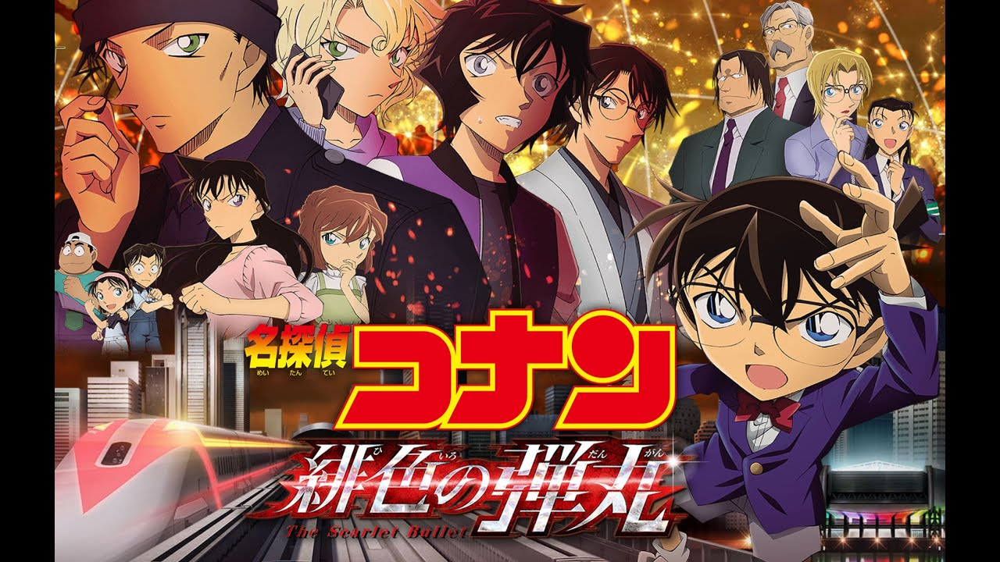

Conan Movie 24

Conan Movie 24 với bối cảnh tập trung vào gia đình Akai. Gia đình Akai
là một gia đình vô cùng đặc biệt, có sự ràng buộc nhất định với Tổ chức
Áo Đen. ... Và Conan đã xuất hiện ở đây suy ra một liên kết có thể xảy ra
với các vụ bắt cóc hàng loạt trong WSG 15 năm trước ở Boston và có liên
quan đến gia đình Akai Shuichi.